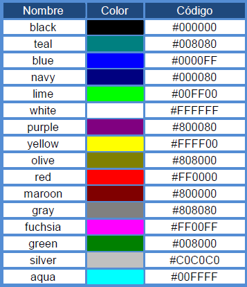

Hexadecimals
Què són els colors hexadecimals?
És el tractament del senyal de vídeo que tracta per separat els senyals dels tres colors vermell, verd i blau.
A l'usar-lo independentment, proporciona major qualitat i reproducció més fidel de la color.
